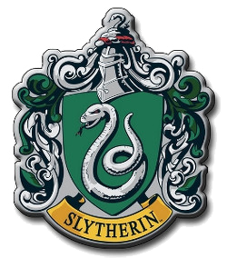

Hogwarts
A Escola de Magia e Bruxaria de Hogwarts, ou simplesmente Hogwarts, é um prestigiado internato britânico de magia para bruxos e bruxas com idades entre onze e dezessete anos. Localizada nas Altas Terras escocesas, aceita estudantes da Grã-Bretanha e da Irlanda. É uma escola pública, financiada pelo Ministério da Magia Britânico. Como a escola não é mapeável, a localização exata dela é desconhecida. Para os trouxas, ela aparenta ser um castelo velho e abandonado. Esse tipo de mecanismo é comum às escolas de magia, que procuram guardar seus métodos de ensino e proteger seus alunos de perigos. A escola foi fundada na Idade Média, aproximadamente no século X, por quatro grandes bruxos da época: Godrico Gryffindor, Salazar Slytherin, Helga Hufflepuff e Rowena Ravenclaw. Cada um deles fundou sua respectiva Casa.
Grifinória
A Grifinória, fundada por Godrico Gryffindor, é uma das quatro casas da Escola de Magia e Bruxaria de Hogwarts. Ao estabelecê-la, Godrico instruiu o Chapéu Seletor a classificar estudantes que obtivessem características as quais ele mais valorizava, como a coragem, o cavalheirismo e a determinação. Suas cores são o escarlate e o ouro e seu animal emblemático é um leão.
Lufa-Lufa
A Lufa-Lufa, fundada por Helga Hufflepuff, é uma das quatro casas da Escola de Magia e Bruxaria de Hogwarts, sendo conhecida como a mais inclusiva entre as outras três; valorizando o trabalho árduo, a dedicação, a paciência, a lealdade e o jogo limpo ao invés de uma aptidão particular de seus membros. Seu animal emblemático é um texugo e suas cores são o amarelo e o preto.

Corvinal
Corvinal, fundada por Rowena Ravenclaw, é uma das quatro casas da Escola de Magia e Bruxaria de Hogwarts. Seus membros, comumente, são caracterizados por sua inteligência, aprendizado e sabedoria. Suas cores são o azul e bronze[6], o animal emblemático é uma águia e sua fantasma patrono é a Dama Cinzenta.
Sonserina
A Sonserina, fundada por Salazar Slytherin, é uma das quatro casas da Escola de Magia e Bruxaria de Hogwarts. Ao estabelecer a casa, Salazar instruiu o Chapéu Seletor a escolher somente alunos que obtivessem algumas de suas características particulares as quais ele prezava. Entre elas incluem a astúcia, desenvoltura, liderança e ambição.Seu animal emblemático é uma serpente e suas cores são verde e prata.
| Casa | Fundador(a) | Virtudes | Bruxo(a) Famoso(a) |
|---|---|---|---|
| Grifinória | Godric Gryffindor | Coragem, ousadia, determinação | Harry Potter |
| Lufa-Lufa | Helga Hufflepuff | Lealdade, paciência, justiça | Ninfadora Tonks |
| Corvinal | Rowena Ravenclaw | Inteligência, criatividade, sabedoria | Fílio Flitwick |
| Sonserina | Salazar Slytherin | Ambição, astúcia, liderança | Severo Snape |